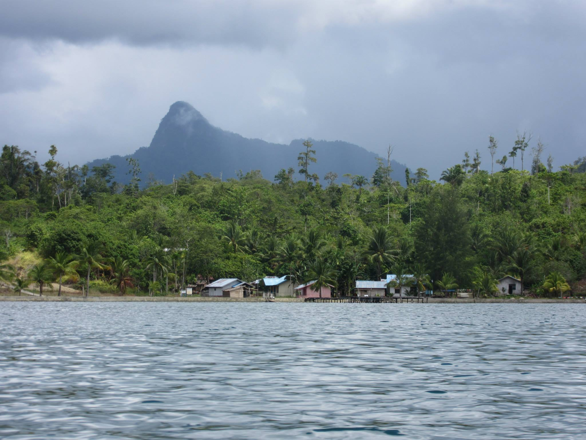
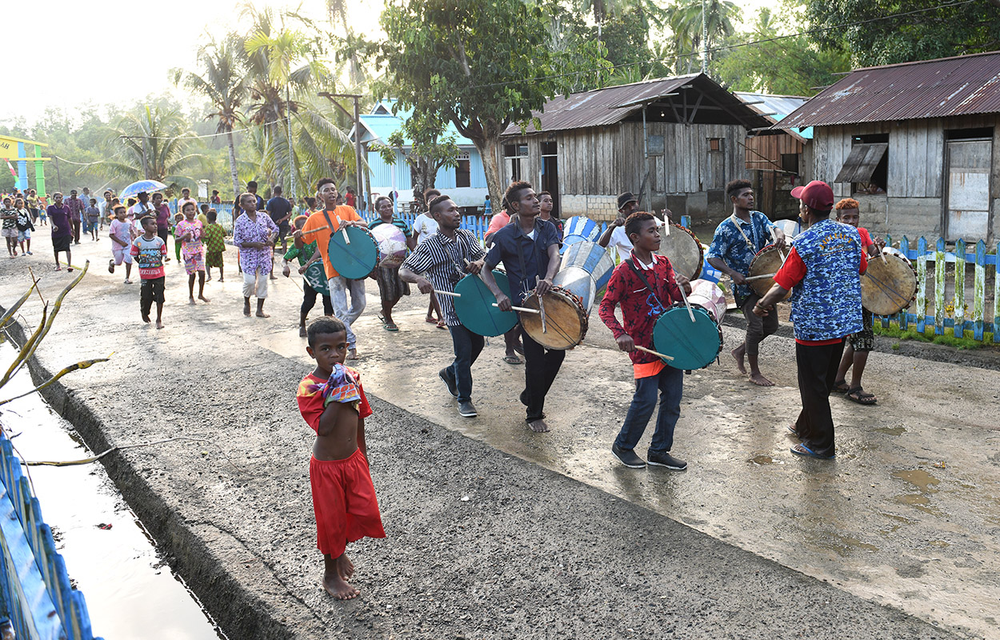

Villages
Meet the communities around Mayalibit Bay and discover local homestays, traditional culture, rainforest, mangroves and water-based experiences across Waigeo Island.
Accommodation and activities may change. Please contact local providers before travelling.
Located at the northern tip of Mayalibit Bay, the village of Go lies nestled against the mountains that separate the bay from Waigeo’s rugged northern coastline, which adventurous hikers can reach within a few hours. To the west, vast untouched mangrove forests stretch deep into the landscape, while the mountains to the east still bear the scars of past nickel mining activities.
Terletak di ujung utara Teluk Mayalibit, desa Go berada di kaki pegunungan yang memisahkan teluk dari pesisir utara Waigeo yang terjal, yang dapat dicapai oleh para pendaki petualang dalam beberapa jam perjalanan. Di sebelah barat, hutan mangrove yang masih alami membentang luas hingga jauh ke pedalaman, sementara pegunungan di sebelah timur masih menyimpan bekas luka akibat aktivitas penambangan nikel di masa lalu.
Kabilol is a small indigenous Ma’ya village on the northwestern shores of Mayalibit Bay. Surrounded by mangrove forests and rich marine ecosystems, the village is part of the Mayalibit Bay Marine Protected Area and maintains strong cultural ties to the traditional Ma’ya way of life. Fishing, sago harvesting, and the sustainable use of coastal resources remain central to the community.
Kabilol adalah sebuah kampung kecil masyarakat adat Ma’ya yang terletak di pesisir barat laut Teluk Mayalibit. Dikelilingi hutan bakau dan ekosistem laut yang kaya, kampung ini merupakan bagian dari Kawasan Konservasi Perairan Teluk Mayalibit serta tetap mempertahankan tradisi dan budaya masyarakat Ma’ya. Perikanan, pemanenan sagu, dan pemanfaatan sumber daya pesisir secara berkelanjutan masih menjadi bagian penting dari kehidupan masyarakat setempat.
Arawai is a quiet Ma’ya village in Mayalibit Bay, where traditional culture and nature remain closely intertwined. Surrounded by mangroves, rainforest, and rich coastal waters, the village offers a glimpse into the daily life and traditions of the indigenous communities of Waigeo. A steep climb up the hills rewards visitors with a spectacular view of the bay.
Arawai adalah kampung masyarakat Ma’ya yang tenang di Teluk Mayalibit, tempat budaya tradisional dan alam masih berpadu erat. Dikelilingi hutan bakau, hutan hujan tropis, dan perairan pesisir yang kaya, kampung ini menawarkan kesempatan untuk mengenal kehidupan sehari-hari serta tradisi masyarakat adat Waigeo. Pendakian menanjak ke perbukitan menghadiahi pengunjung dengan pemandangan teluk yang spektakuler.
Beo is a small Ma’ya village in the heart of Mayalibit Bay, where traditional ways of life remain closely connected to the surrounding coastal and forest environments. Visitors can experience local culture, observe fishing traditions, and explore the mangrove-lined waters and rich biodiversity that characterize this protected area of Waigeo.
Beo adalah sebuah kampung kecil masyarakat Ma’ya di jantung Teluk Mayalibit, tempat kehidupan tradisional masih erat terkait dengan lingkungan pesisir dan hutan di sekitarnya. Pengunjung dapat mengenal budaya lokal, menyaksikan tradisi perikanan masyarakat, serta menjelajahi perairan berhutan bakau dan keanekaragaman hayati yang menjadi ciri khas kawasan lindung di Waigeo ini.
Waifoi is the cultural heart of Mayalibit Bay. The village is home to a traditional Ma’ya ancestral house and the Makai Hun Hat cultural centre, where local performers keep traditional songs and dances alive. Visitors can observe – and join – the process of making sago, the staple food of the Ma’ya people. Surrounded by pristine rainforest and mangroves rich in endemic wildlife, including birds of paradise, Waifoi also offers guided nature walks through one of Raja Ampat’s most ecologically diverse landscapes.
Waifoi merupakan jantung budaya Teluk Mayalibit. Kampung ini menjadi tempat berdirinya rumah adat leluhur Ma’ya serta Pusat Budaya Makai Hun Hat, tempat para seniman lokal melestarikan lagu dan tarian tradisional. Pengunjung dapat menyaksikan – bahkan ikut serta dalam – proses pembuatan sagu, makanan pokok masyarakat Ma’ya. Dikelilingi hutan hujan tropis dan hutan bakau yang masih alami serta kaya akan satwa endemik, termasuk burung cenderawasih, Waifoi juga menawarkan wisata alam berpemandu melalui salah satu kawasan dengan keanekaragaman hayati tertinggi di Raja Ampat.

© Laura ArnoldWarimak is a remote Ma’ya village on the shores of Mayalibit Bay, surrounded by Waigeo’s pristine rainforest and rugged hills. Jungle trails wind through primary forest rich in botanical diversity, leading to caves inhabited by bats and swifts. The village is also a gateway to birdwatching, wildlife observation, and experiences that highlight the traditional culture of the indigenous Ma’ya people.
Warimak adalah kampung masyarakat Ma’ya yang terpencil di Teluk Mayalibit, dikelilingi hutan hujan tropis dan perbukitan yang masih alami. Jalur-jalur setapak menembus hutan primer yang kaya akan keanekaragaman tumbuhan dan mengarah ke gua-gua yang menjadi habitat kelelawar dan burung walet. Kampung ini juga menawarkan kesempatan untuk mengamati burung, satwa liar, serta mengenal budaya tradisional masyarakat adat Ma’ya.

© Raja Ampat Archaeological ProjectKalitoko is a quiet village on the shores of Mayalibit Bay, surrounded by mangrove forests, winding waterways, and pristine rainforest. Visitors can explore nearby rivers and mangroves by boat, hike through tropical forest rich in flora and fauna, and enjoy birdwatching in one of Waigeo’s most biodiverse landscapes.
Kalitoko adalah kampung yang tenang di pesisir Teluk Mayalibit, dikelilingi hutan bakau, alur sungai yang berkelok, dan hutan hujan tropis yang masih alami. Pengunjung dapat menjelajahi sungai dan kawasan bakau dengan perahu, melakukan trekking di hutan yang kaya flora dan fauna, serta mengamati burung di salah satu kawasan dengan keanekaragaman hayati tertinggi di Waigeo.
Warsambin is the village closest to Mayalibit Bay’s most visited attraction, Kali Biru, a jungle-fed river renowned for its striking emerald-blue waters and natural swimming spots. Thanks to its strategic location, the village is rapidly developing its infrastructure and serves as an ideal gateway to the southern region of the bay. Visitors can also explore the mangrove jetties along Mayalibit Bay’s eastern coastline, where calm waters meet dense forests at the water’s edge.
Warsambin merupakan kampung yang paling dekat dengan destinasi paling populer di Teluk Mayalibit, yaitu Kali Biru, sungai yang mengalir dari hutan dengan air berwarna biru kehijauan yang memukau dan menjadi lokasi berenang alami yang indah. Berkat lokasinya yang strategis, kampung ini terus mengembangkan infrastrukturnya dan menjadi gerbang ideal untuk menjelajahi bagian selatan Teluk Mayalibit. Pengunjung juga dapat menikmati jelajah dermaga bakau di pesisir timur teluk, tempat perairan yang tenang bertemu dengan hutan yang membentang hingga ke tepi air.
Lopintol is a traditional village on the western shores of Mayalibit Bay, surrounded by rainforest and limestone karst landscapes. The village serves as a gateway to jungle trekking, cave exploration, and wildlife observation, offering visitors the opportunity to discover some of Waigeo’s most remarkable natural environments.
Lopintol adalah kampung tradisional di pesisir barat Teluk Mayalibit, dikelilingi hutan hujan tropis dan bentang alam karst batu kapur. Kampung ini menjadi pintu gerbang menuju jalur trekking hutan, penjelajahan gua, dan pengamatan satwa liar, menawarkan kesempatan untuk menjelajahi salah satu kawasan alam paling menarik di Waigeo.
Located near the southern entrance to Mayalibit Bay, Mumes is a small Ma’ya village surrounded by mangroves, coastal forests, and sheltered waters. Its strategic position makes it an ideal gateway to the bay’s natural attractions, while nearby waterways and forest trails offer opportunities for wildlife observation and exploration.
Terletak di dekat pintu masuk selatan Teluk Mayalibit, Mumes merupakan kampung kecil masyarakat Ma’ya yang dikelilingi hutan bakau, hutan pesisir, dan perairan yang tenang. Lokasinya yang strategis menjadikannya gerbang ideal untuk menjelajahi berbagai daya tarik alam teluk, sementara jalur perairan dan hutan di sekitarnya menawarkan kesempatan untuk mengamati satwa liar dan menjelajahi alam Waigeo.